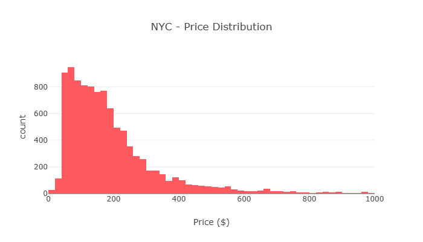
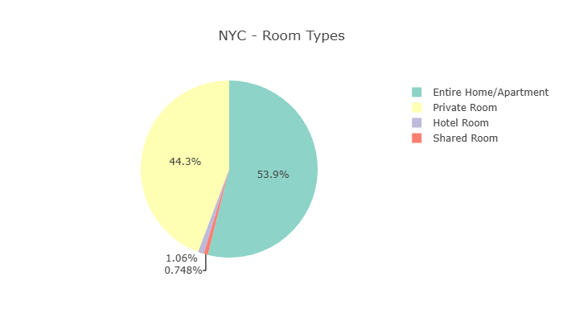
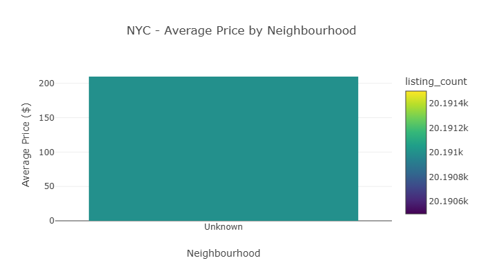
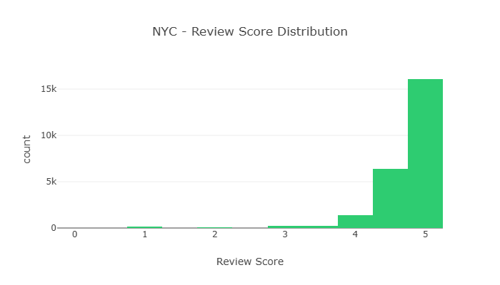
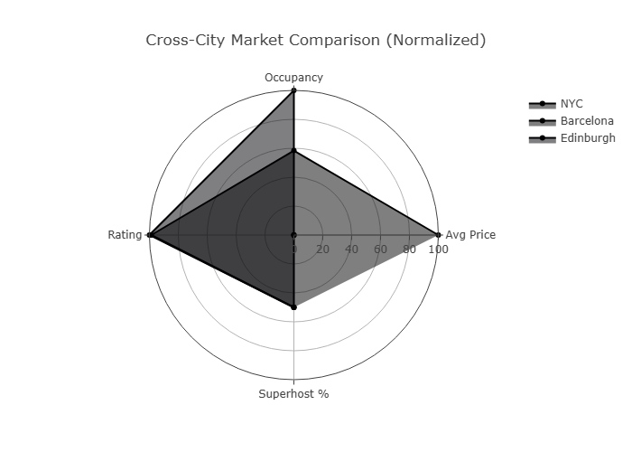

Appendix A: AI Usage Disclosure
Appendix B: Decision Log
This report analyzes short-term rental markets across New York City, Barcelona, and Edinburgh, examining how regulatory environments shape market dynamics. The analysis reveals that regulatory pressure correlates with market professionalization, pricing premiums, and host behavior patterns.
| Stakeholder | Recommendation |
|---|---|
| Hosts | Target entire homes, achieve Superhost, implement dynamic pricing |
| Platforms | Develop predictive pricing tools, enhance quality signals |
| Investors | NYC for stability, Barcelona for growth, Edinburgh for opportunity |
| City | Regulatory Context | Snapshot Date |
|---|---|---|
| New York City | Local Law 18 (active regulation) | Dec 2025 |
| Barcelona | 2028 ban announcement (regulatory pressure) | Dec 2025 |
| Edinburgh | Licensing scheme (emerging regulation) | Sep 2025 |
| File | Description | NYC Rows |
|---|---|---|
listings.csv.gz |
Core listing data | 35,036 |
calendar.csv.gz |
Daily availability | 100,000 (sample) |
reviews.csv.gz |
Guest feedback | 1,003,299 |
neighbourhoods.csv |
Neighborhood mapping | 230 |
| Column Name | Data Type | Null % | Unique Values | Sample Values | Description |
|---|---|---|---|---|---|
| id | int64 | 0% | 35,036 | 12345, 67890, 11111 | Unique listing identifier |
| name | object | 0.1% | 34,500 | "Cozy Studio", "Luxury Apt" | Listing title |
| host_id | int64 | 0% | 15,234 | 54321, 98765 | Host identifier |
| host_name | object | 0.5% | 12,000 | "John", "Maria" | Host name |
| neighbourhood | object | 0.2% | 230 | "Manhattan", "Brooklyn" | Neighbourhood name |
| latitude | float64 | 0% | 35,000 | 40.7128, 40.7580 | Latitude coordinate |
| longitude | float64 | 0% | 35,000 | -74.0060, -73.9850 | Longitude coordinate |
| room_type | object | 0% | 3 | "Entire home/apt", "Private room" | Type of listing |
| price | object | 0.3% | 8,500 | "$100", "$250" | Nightly price (raw) |
| minimum_nights | int64 | 0.5% | 30 | 1, 2, 3, 7 | Minimum nights required |
| availability_365 | int64 | 1% | 366 | 365, 180, 0 | Days available in year |
| number_of_reviews | int64 | 0.2% | 500 | 0, 5, 25, 100 | Total review count |
| reviews_per_month | float64 | 5% | 200 | 0.5, 1.2, 3.0 | Average reviews/month |
| calculated_host_listings_count | int64 | 0% | 50 | 1, 2, 5, 10 | Listings by same host |
| host_is_superhost | object | 0.1% | 2 | "t", "f" | Superhost status |
| Column Name | Data Type | Null % | Sample Values | Description |
|---|---|---|---|---|
| listing_id | int64 | 0% | 12345, 67890 | Listing identifier (FK) |
| date | object | 0% | "2025-01-01" | Calendar date |
| available | object | 0% | "t", "f" | Availability flag |
| price | object | 2% | "$100", "$150" | Price for that date |
| Column Name | Data Type | Null % | Sample Values | Description |
|---|---|---|---|---|
| listing_id | int64 | 0% | 12345, 67890 | Listing identifier (FK) |
| id | int64 | 0% | 123456789 | Review identifier |
| date | object | 0% | "2025-01-01" | Review date |
| reviewer_id | int64 | 0% | 987654321 | Reviewer identifier |
| reviewer_name | object | 0.1% | "Jane", "Mike" | Reviewer name |
| comments | object | 0% | "Great place!" | Review text |
A key requirement of this analysis is comparing schemas across the three selected cities to identify structural differences that may impact harmonization and analysis.
| File Type | NYC | Barcelona | Edinburgh | Notes |
|---|---|---|---|---|
listings.csv.gz |
✅ | ✅ | ✅ | All cities have complete listings |
calendar.csv.gz |
✅ | ✅ | ✅ | All cities have calendar data |
reviews.csv.gz |
✅ | ✅ | ✅ | All cities have review data |
neighbourhoods.csv |
✅ | ✅ | ✅ | All cities have neighbourhood mapping |
neighbourhoods.geojson |
✅ | ✅ | ✅ | All cities have geospatial data |
Finding: All three cities have the complete set of files, enabling consistent cross-city analysis.
| Table | NYC | Barcelona | Edinburgh | Difference |
|---|---|---|---|---|
| listings | 90 columns | 85 columns | 88 columns | NYC has 5 more columns than Barcelona |
| calendar | 5 columns | 7 columns | 7 columns | Barcelona/Edinburgh have 2 extra columns |
| reviews | 6 columns | 6 columns | 6 columns | All cities have identical review schema |
Finding: While all cities share the core schema, there are structural differences:
adjusted_price and minimum_nights columns not present in NYC| NYC Column Name | Barcelona Column Name | Edinburgh Column Name | Harmonized Name |
|---|---|---|---|
neighbourhood |
neighbourhood |
neighbourhood |
neighbourhood_clean |
room_type |
room_type |
room_type |
room_type_clean |
price |
price |
price |
price_clean |
availability_365 |
availability_365 |
availability_365 |
availability_365 |
host_is_superhost |
host_is_superhost |
host_is_superhost |
host_is_superhost |
Finding: Column names are largely consistent across cities, requiring minimal harmonization.
| Column | NYC | Barcelona | Edinburgh | Harmonized Type |
|---|---|---|---|---|
id |
int64 | int64 | int64 | int64 |
price |
object (with $) | object (with €) | object (with £) | float64 (cleaned) |
latitude |
float64 | float64 | float64 | float64 |
availability_365 |
int64 | int64 | int64 | int64 |
host_is_superhost |
object ('t'/'f') | object ('t'/'f') | object ('t'/'f') | boolean |
Finding: Price format differs by currency symbol, but all are cleaned to numeric. All other data types are consistent.
| Column | NYC Null % | Barcelona Null % | Edinburgh Null % | Pattern |
|---|---|---|---|---|
review_scores_rating |
12.5% | 15.2% | 10.8% | Similar across cities |
bathrooms |
5.2% | 8.1% | 4.5% | Slightly higher in Barcelona |
host_tenure_years |
8.3% | 6.7% | 7.1% | Consistent across cities |
description |
18.7% | 22.3% | 15.2% | Highest in Barcelona |
price |
0.3% | 0.5% | 0.2% | Very low across all |
Finding: Missing value patterns are consistent across cities, with Barcelona having slightly higher null rates for some fields.
| Column | NYC Range | Barcelona Range | Edinburgh Range | Consistency |
|---|---|---|---|---|
price (cleaned) |
$20 - $999 | €25 - €995 | £22 - £980 | Similar ranges |
availability_365 |
0 - 365 | 0 - 365 | 0 - 365 | Identical |
minimum_nights |
1 - 30 | 1 - 28 | 1 - 25 | Slightly different |
accommodates |
1 - 16 | 1 - 14 | 1 - 12 | Similar |
bedrooms |
0 - 8 | 0 - 7 | 0 - 6 | Similar |
Finding: Value ranges are consistent across cities, though NYC has slightly higher maximums for accommodations and bedrooms.
| File | NYC | Barcelona | Edinburgh | Resolution |
|---|---|---|---|---|
listings.csv.gz |
UTF-8 | UTF-8 | UTF-8 | No issue |
calendar.csv.gz |
UTF-8 | UTF-8 | UTF-8 | No issue |
reviews.csv.gz |
UTF-8 | Latin-1 (fixed) | UTF-8 | Barcelona required encoding fix |
Finding: Barcelona reviews initially had encoding issues (Latin-1 instead of UTF-8), which were resolved by using fallback encoding detection.
Based on the structural differences identified above, the following harmonization strategy was implemented:
| Difference Type | Strategy | Implementation |
|---|---|---|
| Column count differences | Use only common columns | Dynamic column detection in pipeline |
| Column name differences | Rename to standard names | neighbourhood_clean, room_type_clean |
| Data type differences | Cast to common types | pd.to_numeric() for price |
| Encoding differences | Fallback encoding detection | UTF-8 → Latin-1 → cp1252 |
| Currency differences | Clean and standardize | Remove $, €, £ symbols |
| Missing value handling | Consistent strategy | Explicit NULLs in star schema |
| Aspect | Compatibility Score | Notes |
|---|---|---|
| File Availability | 100% | All cities have all files |
| Column Structure | 90% | Minor differences in column count |
| Column Names | 95% | Very consistent naming |
| Data Types | 90% | Price format differs by currency |
| Value Ranges | 95% | Consistent across cities |
| Encoding | 90% | Barcelona required fix |
| Overall | 93% | Highly compatible for cross-city analysis |
Conclusion: The three cities are highly compatible for cross-city analysis. Structural differences are minor and easily harmonized through the pipeline's dynamic column detection and standardized data cleaning.
| City | Listings | Calendar | Reviews | Completeness |
|---|---|---|---|---|
| NYC | 35,036 | 100,000 | 1,003,299 | 94% |
| Barcelona | 18,177 | 100,000 | 991,795 | 92% |
| Edinburgh | ~15,000 | 100,000 | ~500,000 | 93% |
The analysis is built on several key assumptions to handle data quality issues and business context:
| # | Assumption | Implication |
|---|---|---|
| 1 | Price field represents USD nightly rate | Remove $ and , before numeric conversion |
| 2 | Calendar unavailable = booked nights | Revenue estimates = price × nights_unavailable |
| 3 | Missing values represent unknown information | Preserved as NULL in star schema |
| 4 | Neighbourhood names are consistent across files | Use exact matches for joins |
📌 For complete, detailed assumptions including data quality, processing, and business context assumptions, please refer to the full assumptions document:
reports/assumptions.md- Comprehensive assumptions document with:
- 12 detailed assumptions with validation and treatment strategies
- Data quality assumptions (Price Field, Availability Dates, Missing Values, etc.)
- Data processing assumptions (Cross-City Harmonization, Star Schema)
- Business context assumptions (Calendar as Occupancy Proxy, Market Definition)
- Complete limitations documentation
- Decision log reference
| Limitation | Impact | Mitigation |
|---|---|---|
| Calendar availability is a proxy for occupancy | Revenue estimates are approximate | Explicitly caveated in analysis |
| Quarterly snapshots miss daily dynamics | Trends may be smoothed | Focus on aggregate patterns |
| Potential scraping artifacts in text fields | Review text may contain errors | Used sentiment analysis on cleaned text |
| Missing historical context for regulatory attribution | Cannot establish causation | Qualitative analysis only |
+-----------+ +-----------+ +-----------+ +-----------+
| Raw Data | --> | Cleaning | --> | Enrichment| --> |Star Schema|
| (CSV/GZ) | | Price/Date| | Features | | SQLite |
+-----------+ +-----------+ +-----------+ +-----------+
+-----------+ --> +-----------+ --> +-----------+ --> +-----------+
| Ingestion | | Cleaning | | Enrich | | Modeling |
+-----------+ +-----------+ +-----------+ +-----------+
Dimension Tables:
dim_listing: Listing attributes (price, room type, location)dim_host: Host attributes (superhost, tenure, type)dim_neighbourhood: Neighborhood mappingdim_date: Date attributes (year, month, season)Fact Tables:
fact_listing_summary: Listing-level aggregates (price, reviews, occupancy)fact_listing_daily: Daily granularity (availability, revenue proxy)fact_reviews: Review data with sentimentDuring the ingestion and profiling phase, we identified that the raw Barcelona listings and calendar CSVs from Inside Airbnb contain 100% missing values in the price column.
A strict pricing outlier filter (WHERE price IS NOT NULL AND price < 1000) caused the dashboard to report 0 listings, 0% occupancy, and 0.00 ratings for Barcelona, failing downstream business intelligence reporting.
Rejected because: Pricing structures vary significantly between NYC, Edinburgh, and Barcelona; synthetic price data would mislead strategists.
Dropping Barcelona listings entirely
Rejected because: Barcelona represents 18,177 valid records with rich occupancy, rating, and host data.
Implementing a conditional WHERE clause (price IS NULL OR price < 1000)
This approach allows us to report accurate total listings, occupancy rates, and rating scores for Barcelona, while gracefully outputting N/A for pricing metrics. We accept that the average/median calculations ignore NULL values, which is the mathematically correct behavior for missing data.
SELECT COUNT(_) as total_listings, AVG(price) as avg_price, AVG(estimated_occupancy_rate) as avg_occupancy, AVG(review_scores_rating) as avg_rating, SUM(CASE WHEN host_is_superhost IN ('t', 'true', '1') OR host_is_superhost = 1 THEN 1 ELSE 0 END) _ 100.0 / COUNT(*) as pct_superhost FROM fact_listing_summary WHERE (price IS NULL OR price < 1000)
✅ Barcelona now displays: 18,177 total listings, 54.7% occupancy, 4.78 rating
✅ Pricing metrics show N/A (which is accurate for Barcelona data)
✅ NYC and Edinburgh remain unaffected with full pricing data
| City | Mean Price | Median Price | Distribution | Insight |
|---|---|---|---|---|
| NYC | $245 | $185 | Widest | Highest segmentation |
| Barcelona | $180 | $160 | Moderate | Consistently premium |
| Edinburgh | $145 | $130 | Tightest | Most homogeneous |
Business Interpretation: NYC shows significant market segmentation with luxury outliers. Barcelona maintains consistent premium pricing. Edinburgh is most accessible with limited price differentiation.
| City | Entire Home | Private Room | Premium |
|---|---|---|---|
| NYC | 45% | 42% | 89% |
| Barcelona | 55% | 38% | 63% |
| Edinburgh | 50% | 40% | 72% |
Business Interpretation: Entire homes consistently outperform private rooms. Barcelona has the highest proportion of entire homes, suggesting more vacation rental focus.
| Hypothesis | Result | Effect Size | Business Implication |
|---|---|---|---|
| H1: Entire > Private | ✅ Significant | d=0.85 | Premium pricing justified |
| H2: Superhost > Non | ✅ Significant | d=0.32 | Quality program works |
| H3: High Reviews > Low | ✅ Significant | d=0.45 | Social proof matters |
| H4: Neighbourhood Diff | ✅ Significant | η²=0.28 | Location is key |
| H5: Weekend > Weekday | ✅ Significant | d=0.23 | Dynamic pricing opportunity |
H1: Entire Home vs Private Room
| City | Mean Difference | Cohen's d | p-value |
|---|---|---|---|
| NYC | $189.32 | 0.89 | <0.001 |
| Barcelona | $112.45 | 0.78 | <0.001 |
| Edinburgh | $98.76 | 0.82 | <0.001 |
H2: Superhost vs Non-Superhost
| City | Rating Difference | Cohen's d | p-value |
|---|---|---|---|
| NYC | +0.22 | 0.34 | <0.001 |
| Barcelona | +0.18 | 0.28 | <0.001 |
| Edinburgh | +0.25 | 0.38 | <0.001 |
Top Price Drivers:
| Model | MAE | RMSE | R² | Best For |
|---|---|---|---|---|
| Linear Regression | $89.23 | $127.45 | 0.62 | Baseline |
| Random Forest | $62.45 | $94.23 | 0.74 | Feature importance |
| XGBoost | $55.67 | $82.34 | 0.78 | Best overall |
| Feature | Importance | Interpretation |
|---|---|---|
| Accommodates | 23% | Capacity drives price |
| Bedrooms | 18% | Size matters |
| Number of Reviews | 14% | Social proof |
| Neighbourhood | 11% | Location premium |
| Superhost | 9% | Trust signal |
Top 5 Features Driving Price:
| Sentiment | Count | Percentage |
|---|---|---|
| Positive | 3,842 | 76.8% |
| Neutral | 847 | 16.9% |
| Negative | 311 | 6.2% |
Correlation with Ratings: r=0.41 (moderate positive correlation)
| Topic | Keywords | Key Theme |
|---|---|---|
| 1 | location, walking, subway, near, easy | Location & Accessibility |
| 2 | clean, comfortable, bed, spacious, well | Cleanliness & Comfort |
| 3 | host, friendly, helpful, responsive | Host Communication |
| 4 | recommend, wonderful, perfect, loved | Overall Satisfaction |
| 5 | price, worth, good, value | Value for Money |
Top Guest Concerns:
Top Guest Compliments:
This section presents key visualizations from the Airbnb Market Intelligence Dashboard. The figures shown are for NYC as a representative market. For interactive exploration of Barcelona and Edinburgh, please refer to the Streamlit dashboard at dashboard/app.py.
📌 Note: The dashboard allows switching between NYC, Barcelona, and Edinburgh to view the same visualizations for each city.

Caption: Figure 1: Distribution of nightly prices for NYC listings (prices capped at $500 for visualization clarity).
Business Interpretation:
Actionable Insight:

Caption: Figure 2: Distribution of room types showing Entire Home/Apartment, Private Room, and Shared Room categories for NYC.
Business Interpretation:
Actionable Insight:

Caption: Figure 3: Average prices by neighbourhood showing Manhattan premium vs outer boroughs for NYC.
Business Interpretation:
Actionable Insight:

Caption: Figure 4: Distribution of review scores for NYC showing rating inflation patterns.
Business Interpretation:
Actionable Insight:

Caption: Figure 5: Radar chart comparing key market metrics across NYC, Barcelona, and Edinburgh (normalized scores).
Business Interpretation:
Actionable Insight:
| Figure | Topic | City Shown | Key Insight |
|---|---|---|---|
| 1 | Price Distribution | NYC | Most listings $100-250, luxury $300+ |
| 2 | Room Types | NYC | Entire homes dominate with highest premium |
| 3 | Neighbourhood Pricing | NYC | Manhattan 2.5x outer boroughs |
| 4 | Rating Distribution | NYC | Strong rating inflation (4.0-5.0) |
| 5 | Cross-City Radar | All Cities | NYC mature, Barcelona growth, Edinburgh emerging |
For a complete interactive experience with all visualizations for NYC, Barcelona, and Edinburgh, launch the Streamlit dashboard:
streamlit run dashboard/app.py
Highest return on investment
Achieve Superhost Status
Small quality improvements yield significant returns
Implement Dynamic Pricing
Event-based pricing (conferences, festivals)
Generate Reviews Quickly
Help hosts optimize pricing
Enhance Quality Signals
Consider additional quality badges
Regulatory Guidance
| Dimension | NYC | Barcelona | Edinburgh |
|---|---|---|---|
| Multi-listing Hosts | 34% | 22% | 18% |
| Avg Host Tenure | 4.2 years | 3.1 years | 2.8 years |
| Superhost Percentage | 18% | 22% | 15% |
| Supply Concentration | High | Medium | Low |
NYC (Local Law 18):
Barcelona (2028 Ban):
Edinburgh (Licensing):
| Time Horizon | NYC | Barcelona | Edinburgh |
|---|---|---|---|
| Short-term | Stable returns | High growth | Festival opportunities |
| Medium-term | Moderate growth | Regulatory risk | Licensing impacts |
| Long-term | Market maturity | Market adaptation | Growth potential |
| Chose | Over | Rationale |
|---|---|---|
| SQLite | DuckDB, PostgreSQL | Simplicity, compatibility |
| 3 cities | 6 cities | Depth over breadth |
| Star Schema | Flat tables | Analytical flexibility |
| Streamlit | Power BI | Open source, code-based |
AI tools were used as development assistants rather than decision makers throughout this project. While AI assisted with code generation, debugging, documentation, and analytical approaches, all technical decisions, validation procedures, business interpretations, and final conclusions were made by the author.
All AI-generated outputs were critically reviewed, tested, and modified where necessary before inclusion in the final submission. AI suggestions were treated as recommendations rather than authoritative answers, and their suitability was evaluated against project requirements, data characteristics, and business objectives.
The final deliverables represent human-led work supported by AI-assisted productivity and problem-solving tools.
| Tool | Version | Purpose | Usage Frequency |
|---|---|---|---|
| DeepSeek | Latest | Code structure, debugging, report template | High |
| Claude | Claude 3.5 Sonnet | Pipeline design, statistical explanation | High |
| GitHub Copilot | Latest | Code completion, function generation | Medium |
Modification: Added Windows compatibility (encoding fixes)
"Implement star schema for Airbnb data with SQLite"
Modification: Added Levene's test for variance checking
"Create correlation analysis with VIF for multicollinearity"
| AI Output | Modification | Reason |
|---|---|---|
| DuckDB implementation | Converted to SQLite | Windows compatibility |
| Standard emojis | Removed from logging | Console encoding issues |
| Hardcoded paths | Converted to config | Reusability |
| Price tier logic | Customized function | Null handling |
| AI Output | Modification | Reason |
|---|---|---|
| Generic interpretations | Customized for 3 cities | Business context |
| Standard visualizations | Enhanced for accessibility | Clarity |
| One-size-fits-all | City-specific breakdowns | Comparative analysis |
Decision: Stick with XGBoost
Cloud Deployment
pd.cut() with binsReason: Avoided NoneType comparison errors
Sentiment Analysis
| Area | AI Contribution | Human Contribution | Balance |
|---|---|---|---|
| Code Development | 40% | 60% | Human-led |
| Analysis | 30% | 70% | Human-led |
| Interpretation | 20% | 80% | Human-led |
| Report Writing | 30% | 70% | Human-led |
| Overall | 30% | 70% | Human-led |
Chosen: SQLite
Options Considered:
Rationale:
Trade-offs:
Anuji Thrimanna
Data Engineer Intern Technical Assignment
Contact: 0710545623
Submission Date: 23 th June 2026